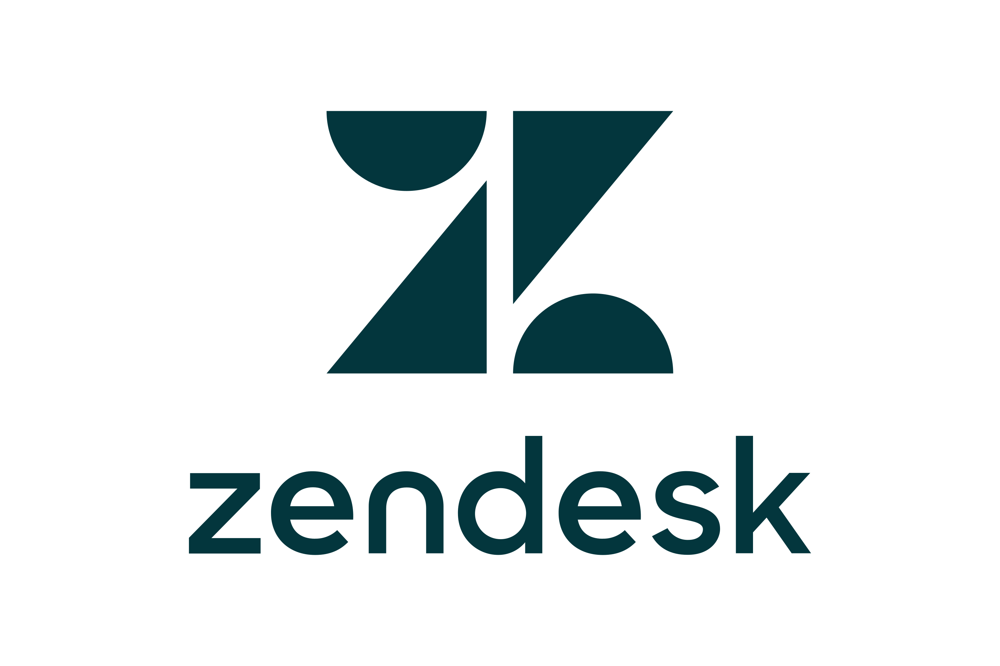
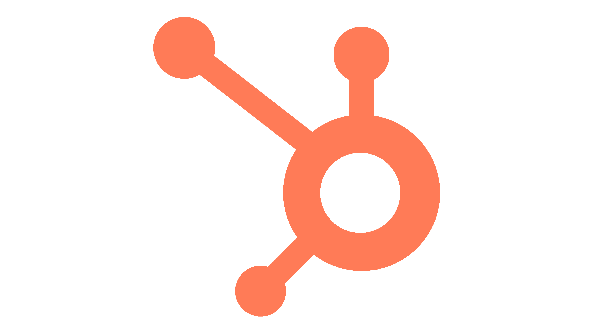
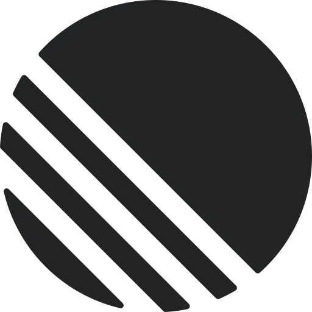
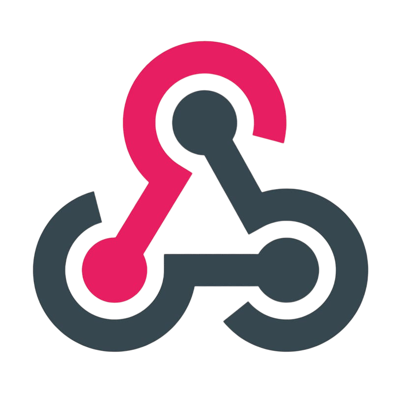

The control plane for AI customer experience
Ship, scale, and refine intelligent agents for support, lead generation, and more — grounded in your business context, with a clear handoff to your team when it matters.
Case study showcase
In production this slot is a React component with video case studies. Redesign or replace freely.
Ground the answer. Close the loop. Hand off with context.
Osonflow runs the full path — from the customer's first message to a clean resolution or a human who already knows the story.
-
Ground
Pull answers from your docs, URLs, and customer memory — every reply carries a source.
-
Resolve
Confidence thresholds decide when AI finishes the thread and when it stays quiet.
-
Hand off
Agents join with full history, intent, and notes — no cold queue, no re-asking.
Fast enough for voice. Steady enough for peak volume.
The same context engine that grounds chat also powers realtime voice — one loop under load.
AI agents without blackbox limitations.
Most bots answer until they can't, then drop the customer into a cold queue with no context. Osonflow is the whole support layer — a fast widget out front, a shared agent workspace behind it, and AI that knows exactly when to step back.
How a calm request resolves itself.
Follow the chronological path from grounding, through confidence checks, to a smooth human hand-off. Tap a step to inspect the live architecture.
Answers grounded in your trusted context.
Connect help docs, upload files, point at URLs, and save customer details. Osonflow answers from what's true for your business — and cites where each answer came from, so your team can trust it.
- Files, URLs, and help center as a single knowledge source
- Customer memory carried across every conversation
- Every reply shows its source for review
A shared inbox your team actually wants to live in.
Threads, assignments, and escalations in one place. See what AI handled, claim what needs a person, and hand work between teammates without losing the plot.
- Assign, claim, and escalate in a click
- AI-handled and human-needed clearly separated
- Internal notes and full history on every thread
Handled refund FAQ. Customer still unhappy with timing.
Hi James — I've pushed your refund through today. Apologies for the wait.
Repetitive work handled — without losing control.
Route by intent, confidence, urgency, and customer context. Let AI close the easy loops automatically, and set the exact thresholds where a human must step in.
- Confidence thresholds you control
- Urgency & VIP rules for instant escalation
- Audit trail on every automated decision
Don't take our word for it. Play with the loop.
Ask the grounded assistant, teach it something new, then watch the same thread surface in the agent inbox — one continuous loop, live in this browser.
Confidence threshold is 80%. Any score below triggers transparent queueing for a specialist.
Current knowledge pool
Grounding corpus active inside the client widget right now.
Same calm loop. Now it can speak.
Realtime voice runs through the same queue, routing, and human handoff as chat. One serene inbox for everything your customers say.
Chat widget
A fast, embeddable widget that drops onto any page with one script.
Realtime voice
Customers talk, AI responds live, and calls escalate to a person on the same queue.
One shared queue
Chat and voice land in the same workspace, with the same routing and history.
Calculate your support cost savings.
Adjust the conversational metrics to see how automating resolution loops reduces live-agent strain.
*Assumes Osonflow auto-resolves 82% of grounded queries, and manual handling averages 6 minutes per inquiry.
See what AI handled, what needed a person, and where support breaks.
Closed by grounded AI — no agent touch
Streaming reply + speech synthesis
Voice and chat, same scoring loop
Active chat threads + voice queues
Support volume kinetics
Autonomous answers vs human hand-offs across a 24-hour window.
Intent mix
Where conversations concentrate right now.
No hallucinations flagged by internal guardrails over the last 120 hours.
Your data never leaves the building you paid for.
Osonflow runs inside a sealed tenancy boundary — indexes, inference, and handoffs stay yours. Public models never see the corpus.
- 01 Ingest Docs, URLs, memory land in a private index.
- 02 Infer Answers are grounded only on that index.
- 03 Decide Confidence gates keep low-certainty replies quiet.
- 04 Hand off Humans inherit the full thread under SLA.
Plugged into where support already happens.




Start free. Scale when AI is carrying real load.
Every plan includes the full support loop — widget, inbox, routing, and human handoff.
For small teams putting AI at the front door.
Start free- 1 widget & embed
- 2 agent seats
- Chat support loop
- Files & URL knowledge
- Basic analytics
For teams running AI plus humans at scale.
Start free trial- Everything in Starter
- Up to 10 agent seats
- Realtime voice support
- Intent & confidence routing
- Customer memory
- Full analytics suite
For high-volume support with security needs.
Talk to sales- Everything in Growth
- SSO & advanced roles
- Custom integrations
- Dedicated routing review
- SLA & priority support
Keeping humans in control.
The questions support leaders ask before trusting AI with customers.
Osonflow intercepts conversation prompts and appends your custom knowledge as text variables. If an inquiry can't be answered from that grounded text, it gracefully flags the thread for human hand-off instead of guessing.
Voice queries undergo real-time speech-to-text translation and are routed identically to chat. The AI forms a grounded textual answer that's translated back into natural synthesized audio in under 380ms.
Never. All indexed files and uploads are sandboxed inside partitioned local storage vectors. Your data is isolated and never used to train global public LLM models.
Every thread tracks confidence scoring. If a visitor requests a human, or Osonflow registers a low-confidence answer, it dispatches a persistent notification. Agents assume control instantly with the complete context.
We only limit seats and concurrency, not absolute volume. Starter includes 2 agent seats; Growth supports up to 10 active agent workspace seats.